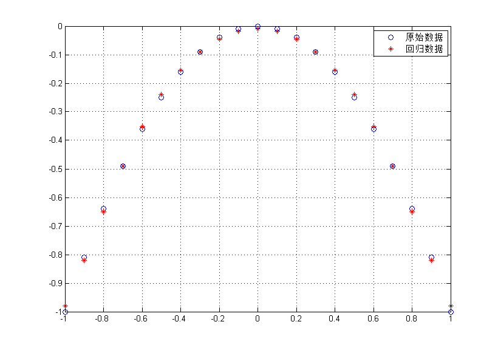

Contents
Matlab神经网络43个案例分析
% 初识SVM分类与回归 % by 李洋(faruto) % http://www.matlabsky.com % Email:faruto@163.com % http://weibo.com/faruto % http://blog.sina.com.cn/faruto % 2013.01.01
A Little Clean Work
tic; clear; clc; close all; format compact;
使用Libsvm进行分类的小例子
%{ 一个班级里面有两个男生（男生1、男生2），两个女生（女生1、女生2），其中 男生1 身高：176cm 体重：70kg； 男生2 身高：180cm 体重：80kg； 女生1 身高：161cm 体重：45kg； 女生2 身高：163cm 体重：47kg； 如果我们将男生定义为1，女生定义为-1，并将上面的数据放入矩阵data中, 并在label中存入男女生类别标签（1、-1） %} data = [176 70; 180 80; 161 45; 163 47]; label = [1;1;-1;-1]; %{ 这样上面的data矩阵就是一个属性矩阵，行数4代表有4个样本，列数2表示属性有两个， label就是标签（1、-1表示有两个类别：男生、女生）。 %} % 利用libsvm建立分类模型 model = svmtrain(label,data); %{ 此时该班级又转来一个新学生，其 身高190cm，体重85kg 我们想给出其标签（想知道其是男[1]还是女[-1]） 由于其标签我们不知道，我们假设其标签为-1（也可以假设为1） %} testdata = [190 85]; testdatalabel = -1; [predictlabel,accuracy] = svmpredict(testdatalabel,testdata,model); predictlabel if 1 == predictlabel disp('==该生为男生'); end if -1 == predictlabel disp('==该生为女生'); end % % 下面再使用libsvm工具箱本身带的测试数据heart_scale来进行一下测试 % 首先载入数据 load heart_scale; data = heart_scale_inst; label = heart_scale_label; % 选取前200个数据作为训练集合，后70个数据作为测试集合 ind = 200; traindata = data(1:ind,:); trainlabel = label(1:ind,:); testdata = data(ind+1:end,:); testlabel = label(ind+1:end,:); % 利用训练集合建立分类模型 model = svmtrain(trainlabel,traindata,'-s 0 -t 2 -c 1.2 -g 2.8'); % 利用建立的模型看其在训练集合上的分类效果 [ptrain,acctrain] = svmpredict(trainlabel,traindata,model); % 预测测试集合标签 [ptest,acctest] = svmpredict(testlabel,testdata,model);
Accuracy = 0% (0/1) (classification)
predictlabel =
1
==该生为男生
Accuracy = 99.5% (199/200) (classification)
Accuracy = 68.5714% (48/70) (classification)
使用Libsvm进行回归的小例子
生成待回归的数据
x = (-1:0.1:1)'; y = -x.^2; % 建模回归模型 model = svmtrain(y,x,'-s 3 -t 2 -c 2.2 -g 2.8 -p 0.01'); % 利用建立的模型看其在训练集合上的回归效果 [py,mse] = svmpredict(y,x,model); scrsz = get(0,'ScreenSize'); figure('Position',[scrsz(3)*1/4 scrsz(4)*1/6 scrsz(3)*4/5 scrsz(4)]*3/4); plot(x,y,'o'); hold on; plot(x,py,'r*'); legend('原始数据','回归数据'); grid on; % 进行预测 testx = 1.1; display('真实数据') testy = -testx.^2 [ptesty,tmse] = svmpredict(testy,testx,model); display('预测数据'); ptesty
Mean squared error = 9.52768e-05 (regression) Squared correlation coefficient = 0.999184 (regression) 真实数据 testy = -1.2100 Mean squared error = 0.0102555 (regression) Squared correlation coefficient = -1.#IND (regression) 预测数据 ptesty = -1.1087
Record Time
toc;
Elapsed time is 0.751164 seconds.